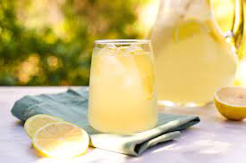

Lemonade
back to Homepage

Description
When life gives you lemons, MAKE THE BEST LEMONADE EVER!
This quick and easy lemonade recipe is perfect for quenching your thirst on the hottest days!
Preparation: 10 mins Cook Time: 5 mins Total Time: 15 mins Servings: 10 (8-ounce servings)
Ingredients
- 13⁄4 cups of Sugar
- 8 cups of Water
- Lemon Juice
- Ice
Steps
- Roll the lemons on a flat surface to help easily get the juices out
- Juice the lemons into a cup until you have about 1 and half cups of lemon juice without seeds
- Bring a mixture of sugar and 1 cup of water to a boil to make a syrup
- Mix about 7 cups of water and the syrup in a pitcher
- Add ice as needed
- Pour a glass and ENJOY!